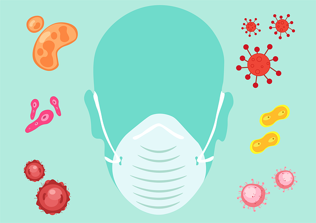

Symptoms

The COVID-19 virus affects different people in different ways. COVID-19 is a respiratory disease and most infected people will develop mild to moderate symptoms and recover without requiring special treatment. People who have underlying medical conditions and those over 60 years old have a higher risk of developing severe disease and death.
Common symptoms include:
- Fever
- Tiredness
- Dry Cough
Other symptoms include:
- shortness of breath
- aches and pains
- sore throat
- and very few people will report diarrhoea, nausea or a runny nose.
Precaution
To prevent infection and to slow transmission of COVID-19, do the following:
- Wash your hands regularly with soap and water, or clean them with alcohol-based hand rub.
- Maintain at least 1 metre distance between you and people coughing or sneezing.
- Avoid touching your face.
- Cover your mouth and nose when coughing or sneezing.
- Stay home if you feel unwell.
- Refrain from smoking and other activities that weaken the lungs.
- Practice physical distancing by avoiding unnecessary travel and staying away from large groups of people.
FAQ Regarding COVID-19
The virus that causes COVID-19 is thought to spread mainly from person to person, mainly through respiratory droplets produced when an infected person coughs or sneezes. These droplets can land in the mouths or noses of people who are nearby or possibly be inhaled into the lungs. Spread is more likely when people are in close contact with one another (within about 6 feet).
COVID-19 seems to be spreading easily and sustainably in the community (“community spread”) in many affected geographic areas. Community spread means people have been infected with the virus in an area, including some who are not sure how or where they became infected.
At this time, there is no evidence that companion animals, including pets, can spread COVID-19 to people or that they might be a source of infection.
Pets have other types of coronaviruses that can make them sick, like canine and feline coronaviruses. These other coronaviruses cannot infect people and are not related to the current COVID-19 outbreak.
However, since animals can spread other diseases to people, it’s always a good idea to practice healthy habits around pets and other animals, such as washing your hands and maintaining good hygiene.
COVID-19 is a new disease and there is limited information regarding risk factors for severe disease. Based on currently available information and clinical expertise, older adults and people of any age who have serious underlying medical conditions might be at higher risk for severe illness from COVID-19.
Based on what we know now, those at high-risk for severe illness from COVID-19 are:
- People aged 65 years and older
- People who live in a nursing home or long-term care facility
- People of all ages with underlying medical conditions, particularly if not well controlled, including:
- People with chronic lung disease or moderate to severe asthma
- People who are immunocompromised
- Many conditions can cause a person to be immunocompromised, including cancer treatment, smoking, bone marrow or organ transplantation, immune deficiencies, poorly controlled HIV or AIDS, and prolonged use of corticosteroids and other immune weakening medications
- People with severe obesity (body mass index [BMI] ≥40)
- People with diabetes
- People with chronic kidney disease undergoing dialysis
- People with liver disease
The process and locations for testing vary from place to place. Contact your state, local, tribal, or territorial department for more information, or reach out to a medical provider. State and local public health departments have received tests from CDC while medical providers are getting tests developed by commercial manufacturers. While supplies of these tests are increasing, it may still be difficult to find someplace to get tested.
Severity typically means how much impact the illness or condition has on your body’s function. You should talk with your healthcare provider if you have a question about your health or how your health condition is being managed.
Community spread means people have been infected with the virus in an area, including some who are not sure how or where they became infected.
Stay home Stay home
.Take care of your family and old-ones.
LETS FIGHT TOGETEHR
Government Initiative/Hlplines for COVID-19
Nataional Helpline Numbers for corona-virus : +91-11-23978046 ; Toll Free No: 1075
The Helpline Email ID for corona-virus : ncov2019@gov.in
Download Aayush App on your phone Link given below
Ayush App
page by:
shivani Jha
follow on :
Web Developer
shivani13.jha@gmail.com
Source: WHO